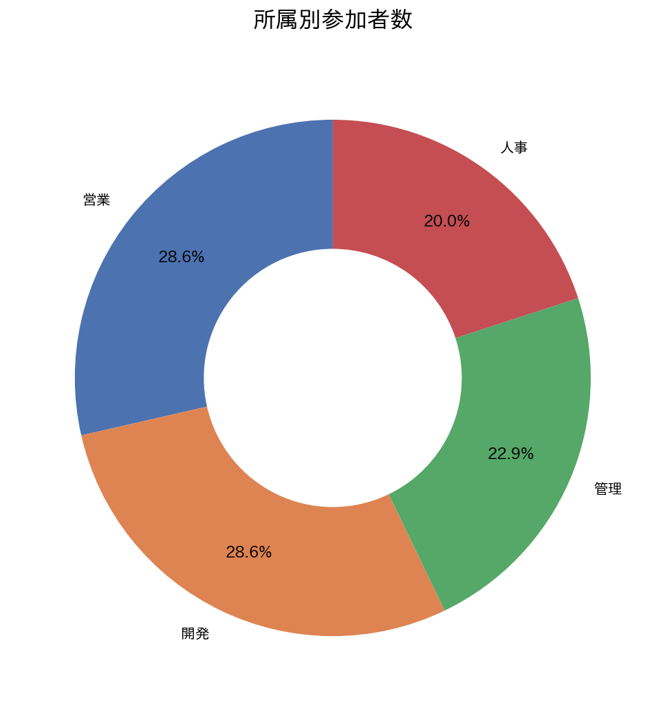
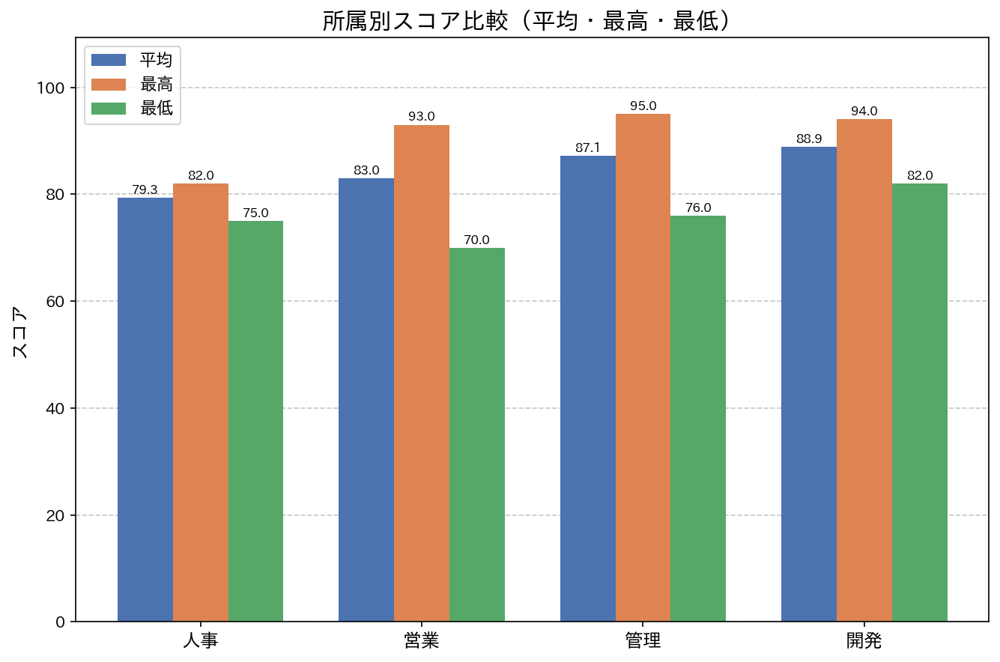
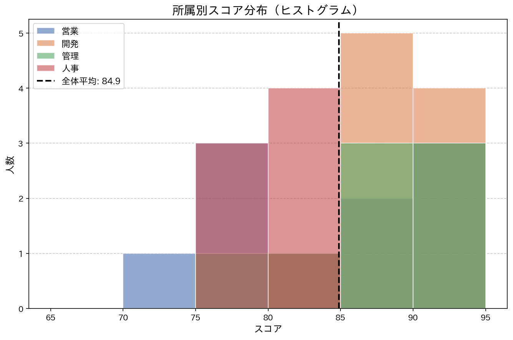
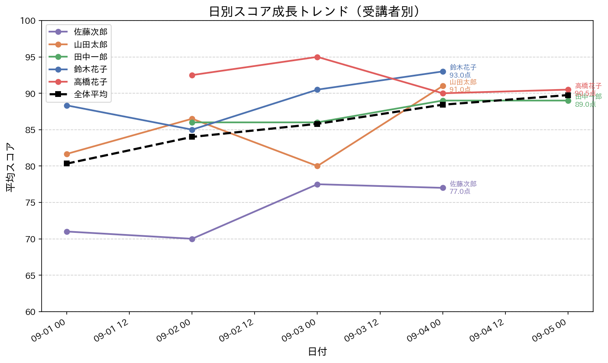
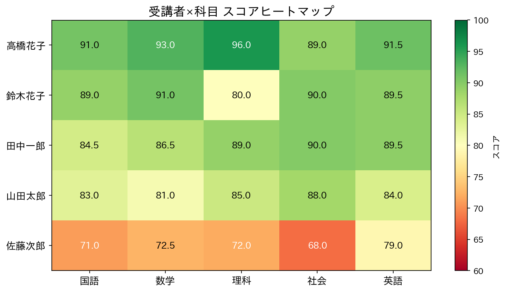
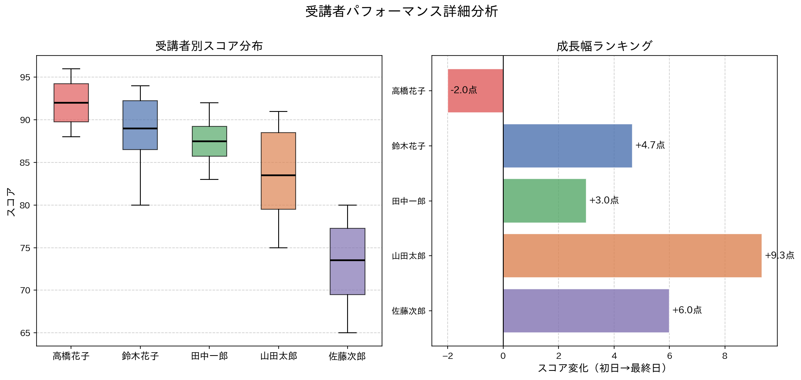

課題2（個人別スコア推移）／ 課題3（所属別パフォーマンス） 2024年9月






| 名前 | 平均 | 成長幅 | 強み科目 | 弱点科目 | 推奨施策 |
|---|---|---|---|---|---|
| 高橋花子 | 92.0点 | ▼ −2.0点 | 理科96点 | 後半失速 | 発展コンテンツ・上位資格挑戦で天井突破を狙う |
| 鈴木花子 | 88.6点 | ▲ +4.7点 | 英語92点 | 理科80点 | 理科強化で全科目90点台が射程圏内 |
| 田中一郎 | 87.5点 | ▲ +9.3点 | 社会90点 | 数学83点 | 継続投資のROI最大。数学底上げで90点台狙い |
| 山田太郎 | 83.6点 | ▲ +3.0点 | 国語91点 | 国語75点※ | 得意科目の安定化と苦手科目の反復練習を |
| 佐藤次郎 | 73.1点 | ▲ +6.0点 | 英語80点 | 国語65点 | 文系科目への個別集中フォロー必須 |
全体平均比 −5.6点。7名全員が低水準に均質化しており自然回復は困難。外部研修・個別コーチングを即時投入。人事の改善は採用品質 → 組織力 → 全部門のパフォーマンスに連鎖する。
ローパフォーマーが全部門最多で最低70点と水準も低い。トップ営業（93点）のナレッジをOJT・ロープレで移転。営業力の組織化が直接的な収益安定化につながる。
成長幅+9.3点は全受講者最大。学習適性が高く、今後のプログラム継続でさらなる成長が期待できる。組織の次世代リーダー候補として育成ロードマップを設計する。
初日から92点超の実力を持つが後半に−2点の微減。天井効果・慣れによる失速を防ぐため、難易度の高い応用課題や外部認定試験への挑戦で学習意欲を維持する。
高スコア・低ばらつきの両部門のメソッドをマニュアル・社内勉強会として可視化。特に営業・人事への水平展開が全体平均を84.9点→90点へ押し上げる近道となる。